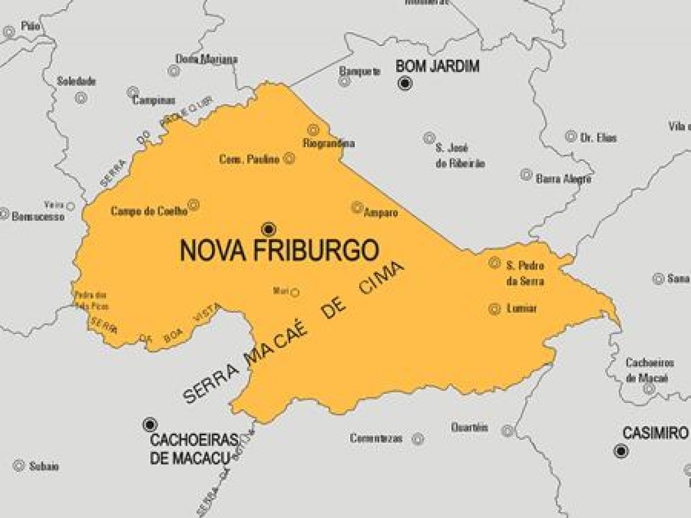

Nova Friburgo está localizada na região serrana do estado do Rio de Janeiro, a aproximadamente 130 km da capital estadual. A cidade foi fundada em 1818 e recebeu esse nome em homenagem ao cantão de Fribourg, de onde vieram parte dos primeiros colonos suíços que se estabeleceram na região. Por isso, ela é frequentemente associada à imigração suíça no Brasil.
O município possui relevo montanhoso e altitude relativamente elevada em comparação com grande parte do estado do Rio de Janeiro. Essa característica influencia diretamente o clima local, que costuma apresentar temperaturas mais amenas ao longo do ano.
A população é formada por descendentes de diversos grupos de imigrantes, incluindo suíços, alemães, italianos, portugueses e outras comunidades que contribuíram para a formação cultural e social da cidade. Essa diversidade deixou marcas na arquitetura, nos sobrenomes das famílias e em diferentes aspectos da vida cotidiana.
Do ponto de vista econômico, Nova Friburgo se destaca historicamente pela indústria, especialmente pelo setor de moda íntima e confecções. A cidade é considerada um dos principais polos brasileiros nesse segmento, reunindo fábricas, pequenas empresas e profissionais especializados na área têxtil.
A educação também tem relevância na cidade, que abriga instituições de ensino e centros de formação profissional que atendem não apenas os moradores locais, mas também estudantes de municípios vizinhos.
Outro aspecto importante é a forte presença de áreas rurais no território municipal. Embora seja conhecida por seu núcleo urbano, grande parte de sua extensão é composta por distritos e comunidades rurais, onde atividades agrícolas continuam desempenhando papel econômico e social relevante.
Em síntese, Nova Friburgo é uma cidade serrana marcada pela influência da imigração europeia, pelo clima de montanha, pela diversidade cultural de sua população e por sua importância econômica na indústria de confecções, especialmente no setor têxtil.
